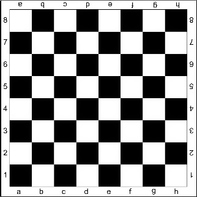
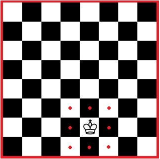
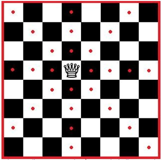
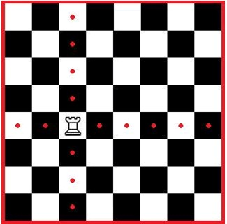
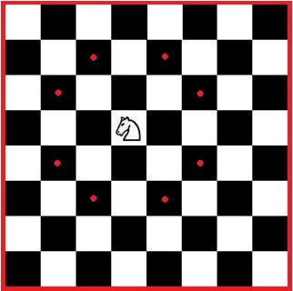
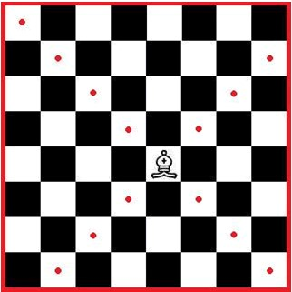
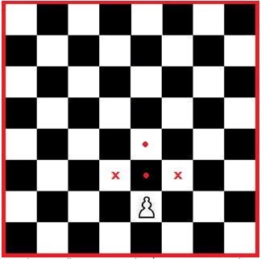

Introdução
Este pequeno manual tem como objetivo te ensinar as regras básicas para se começar a jogar Xadrez, porém está longe de ser um guia completo com todas as informações e nomes que compõem o jogo, é um manual BÁSICO e servirá apenas como guia rápido para quem quer começar a jogar hoje.
Tabuleiro
Para começar precisamos entender como funcionar o tabuleiro de Xadrez. Ele é composto de 8x8 casas, metade preta, metade branca, distribuídas no famoso formato “xadrez”. Seu posicionamento sempre deve ser de forma que uma casa branca fique à direita de cada jogador. O tabuleiro também conta com letras e números para localizar a posição exata de cada peça, números que vão de 1 até 8, e letras que vão de A até H.
Posição das Peças no Tabuleiro
O Xadrez conta com 32 peças onde 16 são brancas e para um jogador e 16 são pretas e para outro jogador. Esses devem organizar as suas da seguinte maneira:
| 2 | Peão | Peão | Peão | Peão | Peão | Peão | Peão | Peão |
| 1 | Torre | Cavalo | Bispo | Dama | Rei | Bispo | Cavalo | Torre |
| a | b | c | d | e | f | g | h |
O Rei sempre deve ficar na casa com a cor oposta a sua
Peças e Seus Movimentos
No Xadrez cada peça tem sua movimentação:
- Rei
- Move-se reto ou na diagonal, porém, apenas uma casa. A bolinhas nas imagens abaixo representam as opções de movimentação, ou seja, as posições que a peça representada pode assumir.
- Dama
- Assim como o Rei, a Dama pode se mover reto ou na diagonal, porém, anda quantas casas quiser, mas apenas em uma das direções por vez.
- Torre
- A Torre se move apenas em direções retas, quantas casas quiser.
- Cavalo
- O cavalo é a peça com a movimentação mais interessante, ele se move em forma de L, indo uma casa para horizontal e duas para a vertical, ou duas casas para horizontal e uma para o vertical. Também é a única peça que pode passar por cima de outras.
- Bispo
- O bispo se move na diagonal, quantas casas quiser.
- Peão
- O peão se move apenas para frente, uma casa por vez, porém, na primeira jogada de qualquer um deles, pode-se mover 2 casas; captura outras peças apenas na diagonal (localização representada por um x na imagem abaixo); pode ser promovido, caso chegue na outra extremidade do tabuleiro, podendo se tonar qualquer outra peça (menos um rei).






Captura de peças
No Xadrez denomina-se captura o ato de posicionar uma de suas peças na mesma posição que outra rival, dessa forma a antiga sai do jogo e sua peça assume a posição dela.
Valor das Peças
Cada peça no jogo dá uma pontuação para quem a captura, ela é utilizada para definir o vencedor em caso de empate:
| Peça | Valor |
|---|---|
| Rei | Infinito |
| Dama | 10 |
| Torre | 5 |
| Cavalo | 3 |
| Bispo | 3 |
| Pesão | 1 |
Representação de Peças
Enquanto jogamos Xadrez, é importante anotarmos as nossas jogadas para que não haja algum problema futuro, porém seria muito demorado escrever o nome da peça e depois colocar o movimento, por isso existe alguns símbolos para nos ajudar:
| Peça | Letra |
|---|---|
| Rei | R |
| Dama | D |
| Torre | T |
| Cavalo | C |
| Bispo | B |
| Pesão | P |
Para simbolizarmos um movimento fazemos assim:
Letra + Posição para qual a peça foi movida
ex: Ta2
Se houver uma captura de peça apenas acrescentamos um X:
Letra + “X” + Posição para qual a peça foi movida
ex: DxC
Xeque e Xeque-Mate
- Xeque
- Xeque é quando o rei está ameaçado por uma, ou mais peças, porém há alguma forma de escapar. Ameaçada(o) é o nome dado ao estado de uma peça que pode ser capturada na próxima rodada.
- Xeque-Mate
- Xeque-mate é o objetivo do jogo, quando o rei está ameaçado por uma, ou mais peças e não há nenhuma forma de escapar.
Jogadas Ilegais
Jogadas ilegais são aquelas que vão contra o jogo, são permitidas até 2 jogadas ilegais por jogador, caso um deles cometa a terceira, automaticamente perde. São consideradas jogadas ilegais:
- Tocar em uma peça e jogar com outra;
- Quando seu rei estiver em cheque, fazer um movimento que não o tire dessa situação;
- Fazer um movimento que coloque seu rei em xeque.
Tempo
Oficialmente o Xadrez é jogado com tempo. O relógio no Xadrez é usado para determinar o tempo de cada movimento.
Empate
Trecho retirado de: http://www.soxadrez.com.br/conteudos/fases_partida/
Rei Afogado: nessa situação o Rei encontra-se encurralado em uma posição da qual não consegue sair, pois nenhum lance é legal. É semelhante ao xeque-mate, exceto pelo Rei não estar em xeque. Esse lance é controverso na história do xadrez, tendo sido considerado por momentos como vitória do jogador cujo Rei termina afogado, em outros momentos visto como derrota, e hoje, finalmente, como empate.
Xeque perpétuo: não há uma regra que defina o xeque perpétuo como empate, no entanto a maioria dos jogadores concorda. Como o próprio nome sugere, o xeque perpétuo ocorre quando um jogador realiza uma série de xeques sem que seja possível dar um mate. Pelas regras oficiais, esse movimento resultará em empate pela Regra das Três Posições ou pela Regra dos 50 Movimentos.
Regra da Três Posições: segundo as regras oficiais estabelecidas pela FIDE, um jogador pode reclamar o empate quando uma posição for repetida pela terceira vez em um jogo. A reclamação deve ser feita na vez do jogador, e as possibilidades de movimento tem que ser as mesmas para todas as peças no tabuleiro. Se na primeira posição existia a possibilidade de roque e agora não há mais, então não é a mesma posição.
Regra dos 50 Movimentos: outra regulamentação da FIDE institui que o jogador pode reclamar o empate se os 50 últimos lances de cada jogador foram feitos sem que nenhuma peça fosse capturada ou que houvesse movimento de qualquer peão.
Insuficiência material: é considerado empate caso os jogadores não tenham peças suficientes para dar o xeque-mate. O mínimo de peças considerado suficiente é de a) Rei e Dama; b) Rei e Torre; c) Rei e dois Bispos; d) Rei, Bispo e Cavalo. Também é possível ganhar a partida com o Rei e um peão, porém ele deve ser promovido a Dama ou Torre para efetuar o xeque-mate e evitar o empate.
Comum Acordo: um jogador pode oferecer o empate, na sua vez, e a partida se dá por encerrada caso o oponente aceite. Se o oponente recusar a oferta de empate, a partida segue, sendo que o jogador a oferecer o empate não pode repetir a oferta, tampouco pode o oponente aceitar a oferta em uma jogada posterior.